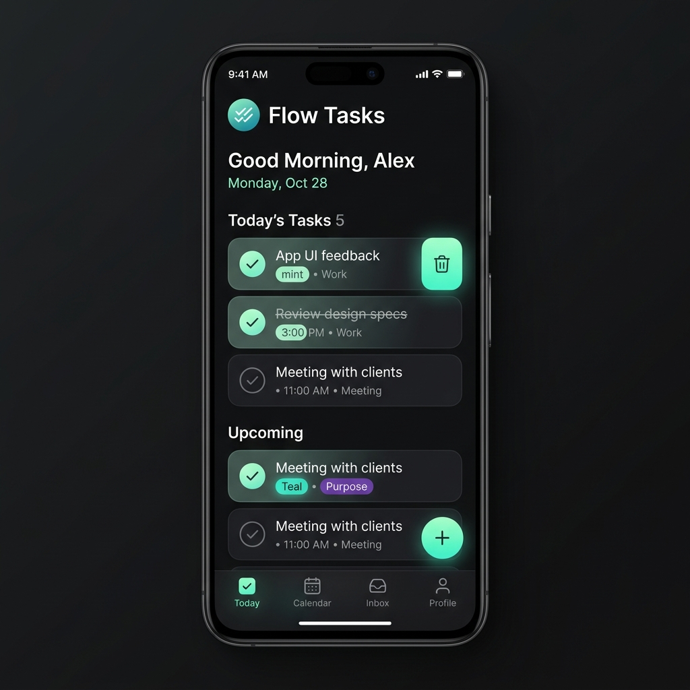
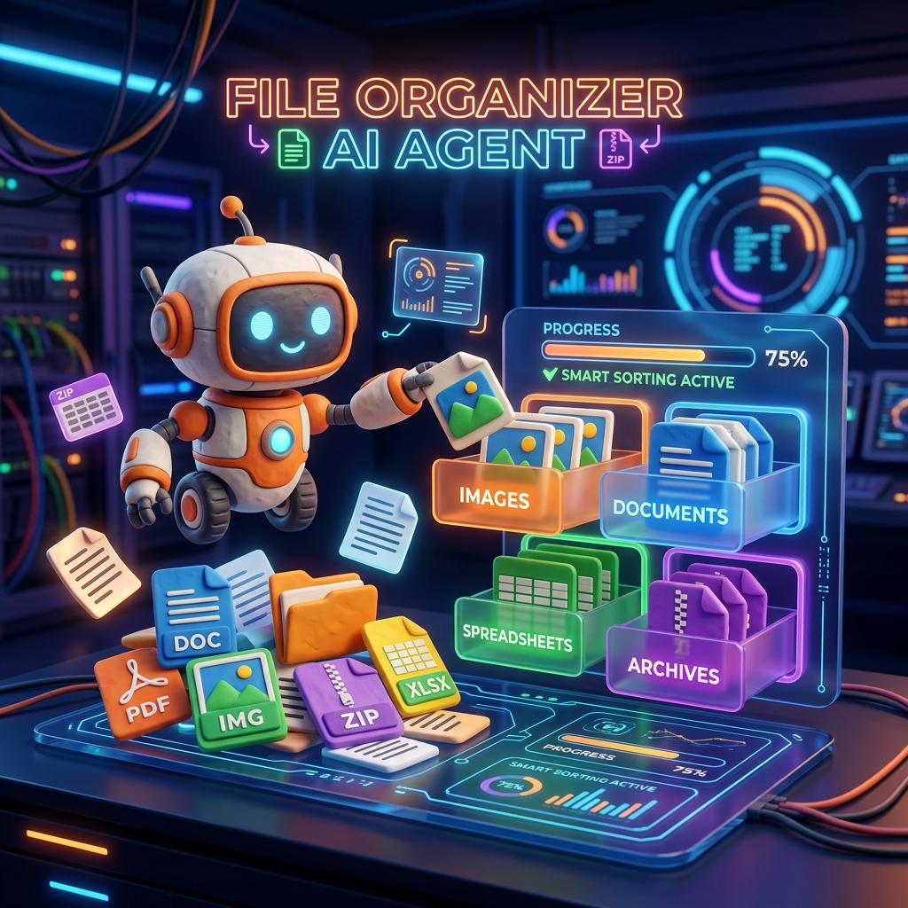
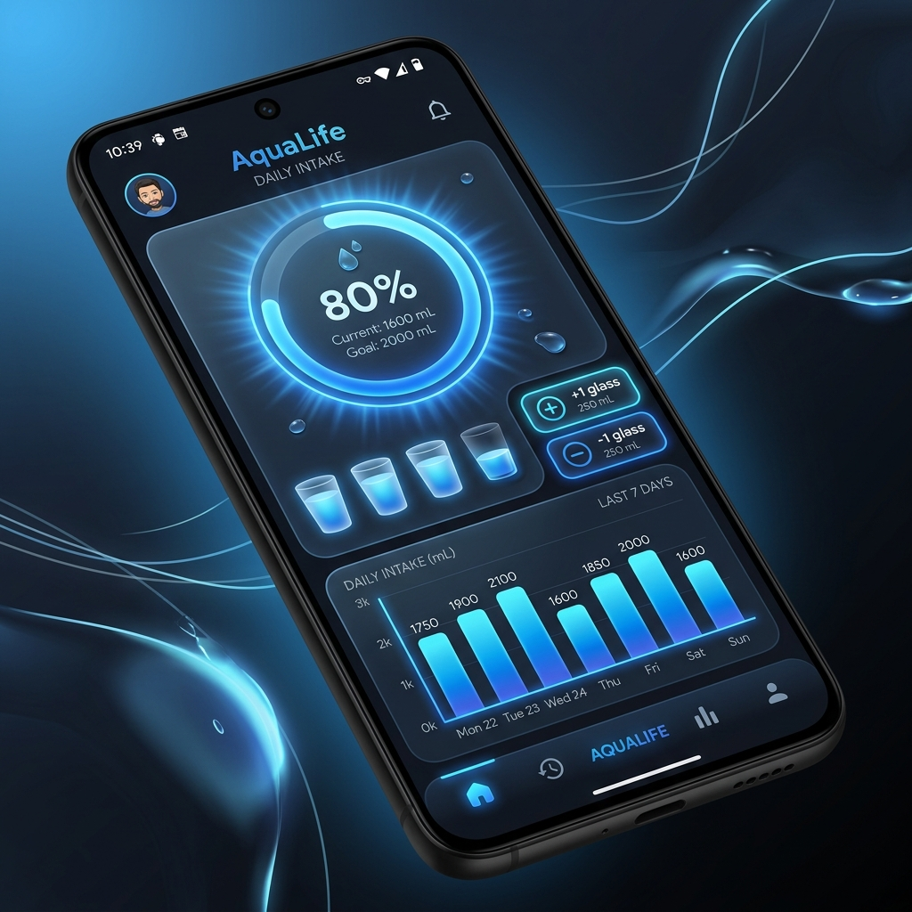

Dự án thực hành
Bốn dự án tăng dần độ khó, làm theo từng bước. Mỗi dự án có sẵn prompt mẫu để bạn sao chép và dùng ngay.
Cách dùng trang này: Mỗi dự án có khối prompt mẫu — bạn sao chép, dán vào công cụ tương ứng, rồi tinh chỉnh theo nhu cầu. Nhớ áp dụng quy trình 6 bước và checklist đã học.
1App web đầu tiên — Danh sách việc cần làm
Độ khó: Dễ Công cụ: Google AI Studio ⏱️ ~15 phút
Mục tiêu: Tạo một app web "to-do list" chạy được trong trình duyệt, để bạn cảm nhận "phép màu" vibecoding lần đầu.

Xem giao diện thật: Đăng nhập aistudio.google.com/apps để thấy Build mode thực tế, hoặc xem ảnh & hướng dẫn chính thức trong tài liệu Google AI Studio.
- Mở AI Studio & vào Build mode Truy cập
aistudio.google.com, đăng nhập bằng tài khoản Google, chọn chế độ Build. - Dán prompt mẫu Sao chép prompt bên dưới vào ô mô tả và chạy.
- Xem trước & thử AI Studio hiện app ngay trong trình duyệt. Thêm vài việc, đánh dấu hoàn thành, xóa thử.
- Chỉnh sửa bằng lời Dùng khung chat để yêu cầu thay đổi (đổi màu, thêm chức năng). Lặp lại đến khi ưng.
- Lưu / triển khai Xuất code (ZIP/GitHub) hoặc deploy một nút để có link chia sẻ.
Bối cảnh: Tôi là người mới, chưa biết lập trình.
Nhiệm vụ: Tạo một ứng dụng web "Danh sách việc cần làm" chạy trong trình duyệt.
Chức năng:
- Ô nhập việc mới và nút "Thêm".
- Mỗi việc có ô đánh dấu hoàn thành (gạch ngang khi xong) và nút xóa.
- Hiển thị số việc còn lại ở dưới.
- Dữ liệu giữ lại khi tải lại trang.
Giao diện: tiếng Việt, gọn gàng, dùng tốt trên điện thoại, màu xanh dịu.
Sau khi tạo xong: giải thích ngắn gọn cho tôi cách dùng và cách lưu lại.Thử thách thêm: Sau khi chạy, yêu cầu: "Thêm chức năng phân loại việc theo nhãn (công việc / cá nhân) và lọc theo nhãn." Đây là bài tập tốt cho kỹ năng "vòng lặp nhỏ".
2Agent dọn thư mục Downloads
Độ khó: Dễ Công cụ: Claude Cowork ⏱️ ~10 phút
Mục tiêu: Để một agent tự sắp xếp thư mục lộn xộn trên máy bạn — ví dụ thực tế đầu tiên về automation.

Trước khi bắt đầu: Hãy thử trên một thư mục bản sao hoặc thư mục thử nghiệm. Yêu cầu agent hỏi trước khi xóa. Không bao giờ để agent xóa file ở lần chạy đầu mà chưa xem nó định làm gì.
- Mở Claude Cowork & chọn thư mục Cấp cho Cowork quyền truy cập đúng thư mục bạn muốn dọn (ví dụ một thư mục thử nghiệm).
- Giao nhiệm vụ Dán prompt mẫu bên dưới.
- Xem kế hoạch Cowork sẽ trình bày nó định làm gì. Đọc kỹ trước khi đồng ý.
- Duyệt & chạy Cho phép thực hiện. Kiểm tra kết quả: các file đã vào đúng nhóm chưa.
- (Tùy chọn) Đặt lịch lặp lại Yêu cầu Cowork chạy việc này tự động mỗi thứ Sáu.
Hãy sắp xếp thư mục tôi vừa chọn cho bạn:
- Tạo các thư mục con theo loại: HinhAnh, TaiLieu, BangTinh, Nen/Zip, Khac.
- Di chuyển từng file vào thư mục con phù hợp dựa trên đuôi file.
- KHÔNG xóa bất kỳ file nào. Nếu thấy file trùng hoặc rất cũ,
hãy liệt kê ra và HỎI tôi trước, đừng tự xóa.
- Cuối cùng, đưa cho tôi một bảng tóm tắt: mỗi nhóm có bao nhiêu file.
Trình bày kế hoạch trước, đợi tôi đồng ý rồi mới thực hiện.Biến thành thói quen: Sau khi chạy ổn, nói với Cowork: "Chạy đúng việc dọn thư mục này tự động vào 17h mỗi thứ Sáu hằng tuần." Cowork hỗ trợ đặt lịch tác vụ tự động.
3Bản tin tự động theo lịch
Độ khó: Trung bình Công cụ: Claude Cowork ⏱️ ~20 phút
Mục tiêu: Một agent tự tổng hợp tin tức theo chủ đề bạn quan tâm và gửi cho bạn mỗi sáng — ví dụ kinh điển về agent chạy theo lịch.
- Xác định chủ đề & đầu ra Quyết định chủ đề (vd: "tin AI") và định dạng (vd: file HTML đẹp, hoặc email).
- Chạy thử một lần (thủ công) Dán prompt mẫu, để Cowork tạo bản tin một lần. Kiểm tra chất lượng, độ chính xác, link.
- Tinh chỉnh Góp ý: số lượng tin, độ dài tóm tắt, nguồn ưu tiên, ngôn ngữ.
- Đặt lịch tự động Yêu cầu chạy mỗi sáng 6h và gửi cho bạn.
- Theo dõi & cải thiện Vài ngày đầu xem kết quả mỗi sáng, chỉnh prompt nếu cần.
Hãy làm cho tôi một bản tin AI hằng ngày:
- Tìm 8–10 tin tức AI mới và đáng chú ý nhất từ các nguồn uy tín.
- Với mỗi tin: tiêu đề, tóm tắt ~120 chữ bằng tiếng Việt, và link nguồn gốc.
- Tổng hợp vào một file HTML trình bày đẹp, dễ đọc trên điện thoại.
- Kiểm tra lại các link còn hoạt động trước khi đưa cho tôi.
Chạy thử một lần ngay bây giờ để tôi xem trước.Sau khi ưng, đặt lịch: "Từ mai, chạy đúng quy trình bản tin AI này vào 6h sáng mỗi ngày và gửi file cho tôi." Đây là lúc bạn biến một việc thủ công thành một agent thật sự tự động.
Liên hệ thực tế: Đây chính là kiểu quy trình mà các "skill/plugin" đóng gói sẵn — ví dụ một pipeline gồm: viết bản tin → kiểm tra link → kiểm tra ảnh → gửi email, chạy chỉ bằng một lệnh. Khi quen, bạn có thể đóng gói quy trình của mình để tái dùng.
4App Android từ một câu — rồi hoàn thiện
Độ khó: Trung bình AI Studio → Antigravity ⏱️ ~30 phút
Mục tiêu: Trải nghiệm tạo app Android thật (không phải web giả dạng) chỉ từ một câu mô tả, sau đó mang sang Antigravity để agent hoàn thiện và kiểm thử.

- Tạo app Android trong AI Studio Ở Build mode, dán prompt mẫu. AI Studio sinh app Android native (Kotlin + Jetpack Compose) và chạy trong máy ảo Android ngay trên trình duyệt — không cần điện thoại.
- Xem trước trên máy ảo Thử các màn hình, kiểm tra luồng dùng.
- Tinh chỉnh bằng lời Yêu cầu thêm màn hình, đổi bố cục, thêm dữ liệu mẫu.
- Xuất code & mở trong Antigravity Xuất ZIP hoặc đẩy lên GitHub, rồi mở dự án trong Antigravity.
- Giao agent hoàn thiện & kiểm thử Trong Antigravity, để agent rà lỗi, bổ sung tính năng và tạo Artifacts (ảnh chụp, ghi lại thao tác) để bạn duyệt.
Tạo một app Android theo dõi thói quen uống nước:
- Màn hình chính hiển thị số ly nước đã uống hôm nay và mục tiêu (vd 8 ly).
- Nút "+1 ly" và "-1 ly".
- Vòng tròn tiến độ thể hiện % so với mục tiêu.
- Màn hình cài đặt để đổi mục tiêu hằng ngày.
Giao diện tiếng Việt, hiện đại, nhẹ nhàng. Cho tôi xem trước trên máy ảo.Mở dự án app uống nước này. Hãy:
- Rà soát và sửa các lỗi hiện có.
- Thêm lịch sử 7 ngày gần nhất dạng biểu đồ cột.
- Tự chạy thử trên trình duyệt/máy ảo và chụp màn hình các thay đổi.
- Tổng hợp những gì đã làm vào một Artifact để tôi duyệt.Hoàn thành 4 dự án nghĩa là bạn đã đi trọn vòng: tạo app (AI Studio), tự động hóa việc (Cowork), agent theo lịch (Cowork), và quy trình phối hợp công cụ (AI Studio → Antigravity). Giờ bạn đủ nền tảng để tự nghĩ ra dự án của riêng mình.
5Tiếp theo nên làm gì?
- Chọn một việc lặp lại trong tuần của bạn và thử biến nó thành agent Cowork chạy theo lịch.
- Dựng một công cụ nhỏ giải quyết vấn đề thật của bạn bằng AI Studio, rồi chia sẻ link cho bạn bè.
- Tìm hiểu MCP & connectors để kết nối agent với các ứng dụng bạn đang dùng (xem lại phần MCP).
- Đọc tài liệu chính thức ở trang Nguồn khi muốn đào sâu một công cụ cụ thể.